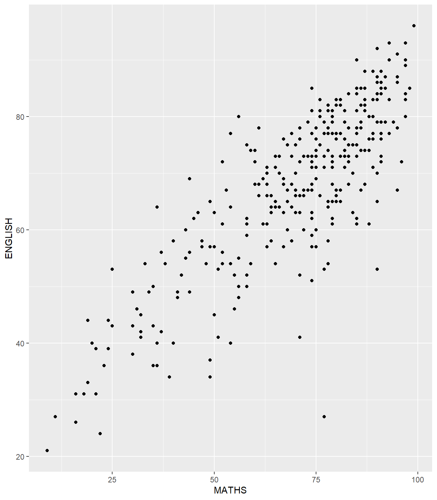

pacman::p_load(tidyverse)In-class Exercise 1: Programming Elegant DataVis with ggplot2
Creating In-class Exercise 1 page
Start a new Quarto document call In-class_Ex01 in RStudio.
Add a new link onto your course web page.
Render the newly created qmd file into html page.
Push all the changes onto github.
Refresh your web page to ensure that the In-class Exercise 1 page has been added properly.
Getting started
- Using
p_load()of pacman package to load tidyverse on
- Importing data
exam_data <- read_csv("data/Exam_data.csv")Working with theme
Plot a horizontal bar chart looks similar to the figure below.
- Changing the colors of plot panel background of
theme_minimal()to light blue and the color of grid lines to white.

ggplot(data=exam_data, aes(x=RACE)) +
geom_bar() +
coord_flip() +
theme_minimal() +
theme(
panel.background = element_rect(fill = "lightblue", colour = "lightblue",
size = 0.5, linetype = "solid"),
panel.grid.major = element_line(size = 0.5, linetype = 'solid', colour = "white"),
panel.grid.minor = element_line(size = 0.25, linetype = 'solid', colour = "white"))Designing Data-drive Graphics for Analysis I
The original design
A simple vertical bar chart for frequency analysis. Critics:
- y-aixs label is not clear (i.e. count)
- To support effective comparison, the bars should be sorted by their resepctive frequencies.
- For static graph, frequency values should be added to provide addition information.

Designing Data-drive Graphics for Analysis I
With reference to the critics on the earlier slide, create a makeover looks similar to the figure on the right.

ggplot(data=exam_data,
aes(x=reorder(RACE,RACE,
function(x)-length(x)))) +
geom_bar() +
ylim(0,220) +
geom_text(stat="count",
aes(label=paste0(..count.., ", ",
round(..count../sum(..count..)*100, 1), "%")),
vjust=-1) +
xlab("Race") +
ylab("No. of\nPupils") +
theme(axis.title.y=element_text(angle = 0))Designing Data-drive Graphics for Analysis I
This code chunk uses fct_infreq() of forcats package.
exam_data %>%
mutate(RACE = fct_infreq(RACE)) %>%
ggplot(aes(x = RACE)) +
geom_bar()+
ylim(0,220) +
geom_text(stat="count",
aes(label=paste0(..count.., ", ",
round(..count../sum(..count..)*100,
1), "%")),
vjust=-1) +
xlab("Race") +
ylab("No. of\nPupils") +
theme(axis.title.y=element_text(angle = 0))Credit: I learned this trick from Getting things into the right order of Prof. Claus O. Wilke, the author of Fundamentals of Data Visualization
Designing Data-drive Graphics for Analysis II
The original design

Designing Data-drive Graphics for Analysis II
- Adding mean and median lines on the histogram plot.
- Change fill color and line color

ggplot(data=exam_data,
aes(x= MATHS)) +
geom_histogram(bins=20,
color="black",
fill="light blue") +
geom_vline(aes(xintercept=mean(MATHS, na.rm=T)),
color="red",
linetype="dashed",
size=1) +
geom_vline(aes(xintercept=median(MATHS, na.rm=T)),
color="grey30",
linetype="dashed",
size=1)Designing Data-drive Graphics for Analysis III
The original design
The histograms on the left are elegantly designed but not informative. This is because they only reveal the distribution of English scores by gender but without context such as all pupils.

Designing Data-drive Graphics for Analysis III
Create a makeover looks similar to the figure below. The background histograms show the distribution of English scores for all pupils.
ggplot(d, aes(x = ENGLISH, fill = GENDER)) + geom_histogram(data = d_bg, fill = “grey”, alpha = .5) + geom_histogram(colour = “black”) + facet_wrap(~ GENDER) + guides(fill = FALSE) + # to remove the legend theme_bw() # for clean look overall
### The code chunk
::: {style="font-size: 1.4em"}
::: {.cell}
```{.r .cell-code}
d <- exam_data
d_bg <- d[, -3]
ggplot(d, aes(x = ENGLISH, fill = GENDER)) +
geom_histogram(data = d_bg, fill = "grey", alpha = .5) +
geom_histogram(colour = "black") +
facet_wrap(~ GENDER) +
guides(fill = FALSE) +
theme_bw()::: :::
Designing Data-drive Graphics for Analysis IV
The original design.

Designing Data-drive Graphics for Analysis IV
Create a makeover looks similar to the figure on the below.
ggplot(data=exam_data,
aes(x=MATHS, y=ENGLISH)) +
geom_point() +
coord_cartesian(xlim=c(0,100),
ylim=c(0,100)) +
geom_hline(yintercept=50,
linetype="dashed",
color="grey60",
size=1) +
geom_vline(xintercept=50,
linetype="dashed",
color="grey60",
size=1)